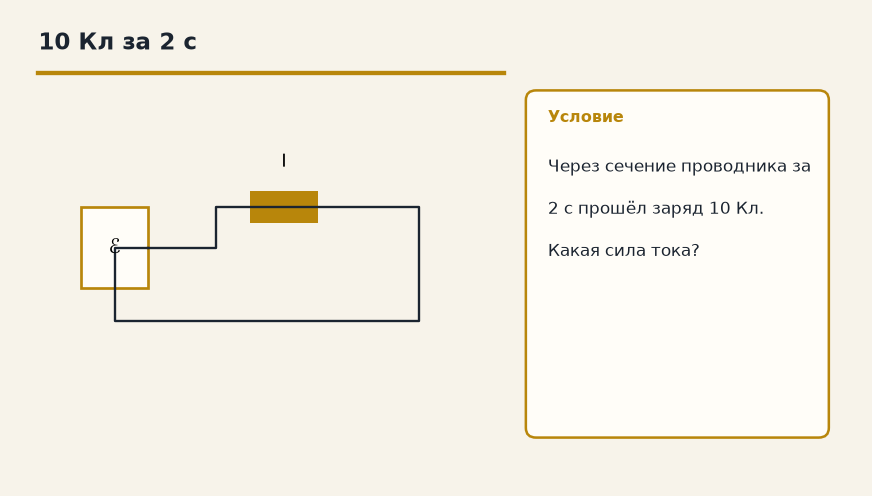

Тема «Сила тока и напряжение»: физический смысл, единицы величин, типичные ошибки и два разобранных примера.

Схема к условию.
Физический смысл
Сила тока (I) — сколько заряда проходит через поперечное сечение проводника за 1 секунду. Единица — ампер (А). Напряжение (U) — работа поля по перемещению единичного заряда. Единица — вольт (В).
Сила тока I — заряд, который проходит через сечение проводника за одну секунду: I = q/t. Единица — ампер. Если за 2 с прошло 10 Кл, ток 5 А.
Напряжение U — работа поля по переносу заряда в один кулон: U = A/q, единица — вольт. Это та же разность потенциалов, только сказанная через работу.
Водопровод помогает не перепутать: ток похож на расход литров в секунду, напряжение — на давление, которое этот расход продавливает. Без давления вода стоит, без напряжения заряды не бегут упорядоченно.
Формула и единицы
I = q / t
U = A / q
I = q/t (А), U = A/q (В).
Пояснение
Водопроводная труба. Сила тока — это сколько литров воды вытекает за секунду (скорость потока). Напряжение — это давление воды.
Труба: сила тока — сколько литров вытекает за секунду, напряжение — давление воды.
Типичные ошибки
Ток — не «скорость одной молекулы воды», а заряд в секунду. Напряжение — не сам ток.
Схему к задаче нарисуйте сами. Решение открывается отдельно.
Разбор 1
За восемь секунд
За 4 с через сечение провода прошло 8 Кл. Найдите силу тока.
Сначала данные, затем перевод в СИ, если он нужен, потом ход и ответ.
Дано. q = 8 Кл, t = 4 с
В СИ. Перевод не нужен: все величины уже заданы в СИ.
Найти. I
Решение.
I = q / t = 8 / 4 = 2 А.
2 А.
Схема для сверки. Её рисуют до того, как открывают решение.
Разбор 2
По работе
Поле совершило работу 15 Дж, перенеся 5 Кл. Найдите напряжение.
Сначала данные, затем перевод в СИ, если он нужен, потом ход и ответ.
Дано. A = 15 Дж, q = 5 Кл
В СИ. Перевод не нужен: все величины уже заданы в СИ.
Найти. U
Решение.
U = A / q = 15 / 5 = 3 В.
3 В.
Схема для сверки. Её рисуют до того, как открывают решение.
Разбор 3
Заряд по току
Ток 0,4 А шёл 30 с. Какой заряд прошёл через сечение?
Сначала данные, затем перевод в СИ, если он нужен, потом ход и ответ.
Дано. I = 0,4 А, t = 30 с
В СИ. Перевод не нужен: все величины уже заданы в СИ.
Найти. q
Решение.
q = I t = 0,4 · 30 = 12 Кл.
12 Кл.
Схема для сверки. Её рисуют до того, как открывают решение.
Разбор 4
Минута
Ток 0,2 А шёл 2 мин. Найдите прошедший заряд.
Сначала данные, затем перевод в СИ, если он нужен, потом ход и ответ.
Дано. I = 0,2 А, t = 2 мин
В СИ.
2 мин = 120 с.
Найти. q
Решение.
q = 0,2 · 120 = 24 Кл.
24 Кл.
Схема для сверки. Её рисуют до того, как открывают решение.
Разбор 5
Что такое ампер
Как связаны ампер, кулон и секунда?
Сначала данные, затем перевод в СИ, если он нужен, потом ход и ответ.
Дано. определение силы тока
В СИ. Перевод не нужен: все величины уже заданы в СИ.
Найти. связь
Решение.
1 А = 1 Кл/с.
Ампер — кулон в секунду.
Схема для сверки. Её рисуют до того, как открывают решение.
Разбор 6
Работа 9 Дж
При напряжении 4,5 В перенесли 2 Кл. Найдите работу поля.
Сначала данные, затем перевод в СИ, если он нужен, потом ход и ответ.
Дано. U = 4,5 В, q = 2 Кл
В СИ. Перевод не нужен: все величины уже заданы в СИ.
Найти. A
Решение.
A = q U = 9 Дж.
9 Дж.
Схема для сверки. Её рисуют до того, как открывают решение.
Разбор 7
Не скорость воды
Почему силу тока нельзя называть скоростью одной частицы в проводе?
Сначала данные, затем перевод в СИ, если он нужен, потом ход и ответ.
Дано. определение I = q / t
В СИ. Перевод не нужен: все величины уже заданы в СИ.
Найти. различие
Решение.
Ток — это заряд, проходящий за секунду.
Скорость носителей — другая величина.
Ток измеряет заряд за время, а не скорость одной частицы.
Схема для сверки. Её рисуют до того, как открывают решение.